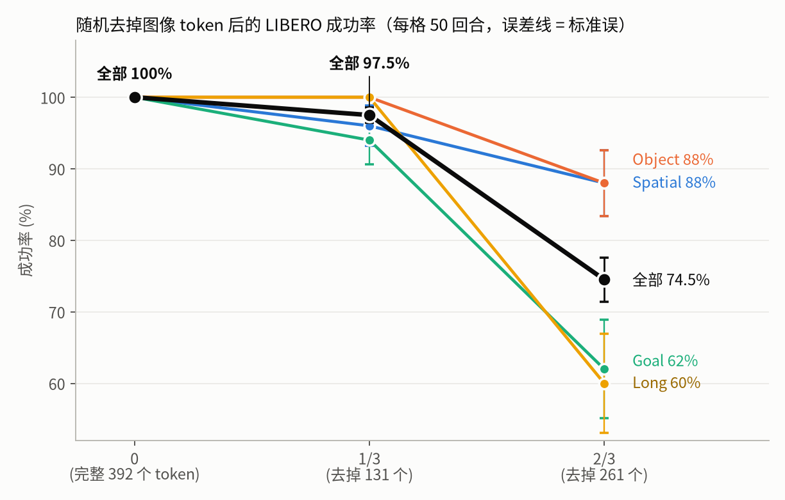
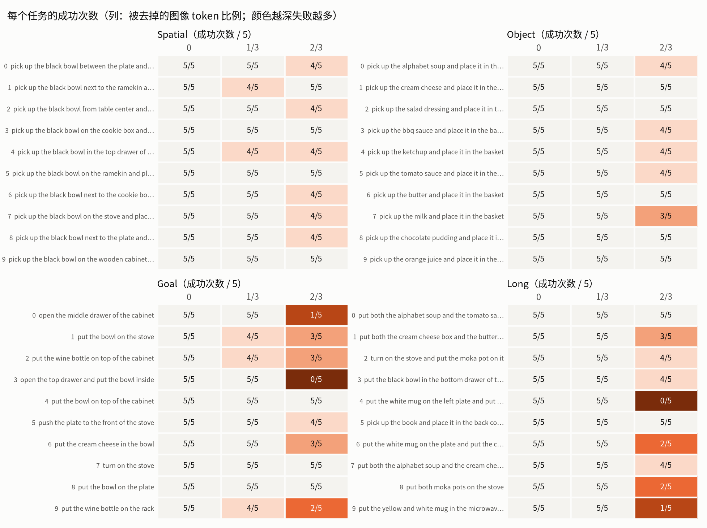
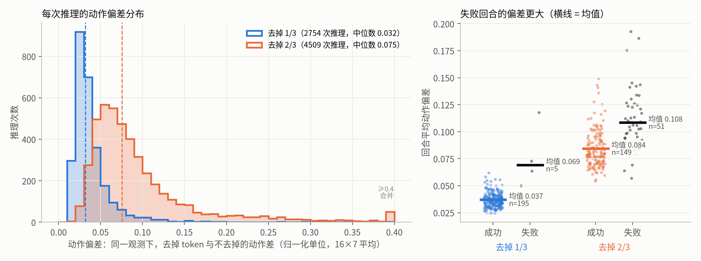
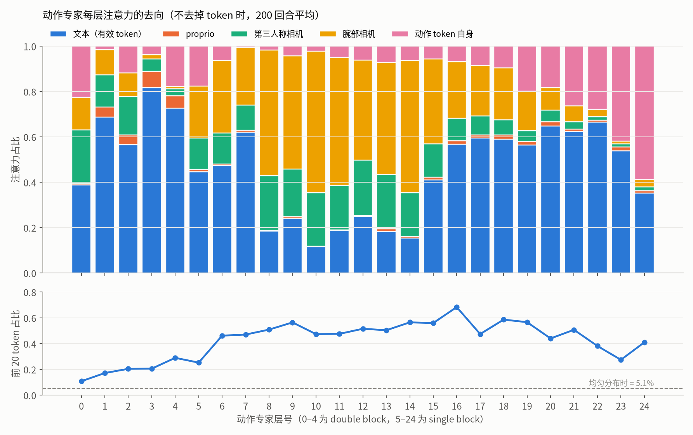
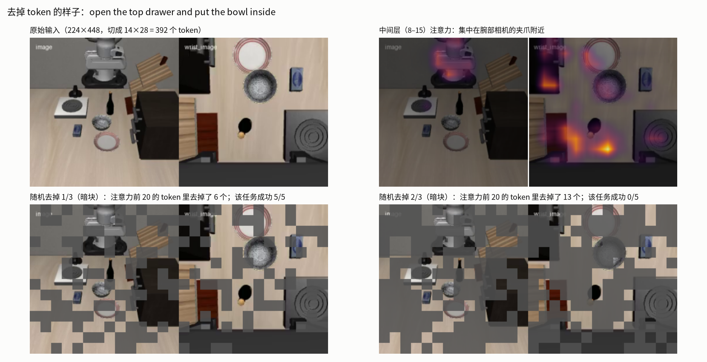

LIBERO 随机去掉图像 token（ImageWAM-FLUX.2-4B，600 回合，OSMesa 渲染）

去掉 1/3：97.5%，与完整输入无显著差异（配对 p = 0.062）；去掉 2/3：74.5%（p = 9e-16），Goal 与 Long 掉得最多。

逐任务看，掉点集中在需要找特定物体（开抽屉、放置到指定位置）和多子目标的长任务。

同一观测下去掉 token 前后的动作差；去掉 2/3 时偏差约是 1/3 的 2.5 倍，失败回合的偏差更大。

早期和后期层主要看文本，中间层主要看腕部相机；中间层里 392 个图像 token 中前 20 个就占了约一半图像注意力。
 注意力叠加在真实画面上：中间层集中在腕部相机里的夹爪和被抓物体。
注意力叠加在真实画面上：中间层集中在腕部相机里的夹爪和被抓物体。

随机 mask 不区分重要与否，去掉 2/3 时会把夹爪附近的关键 token 一起去掉。